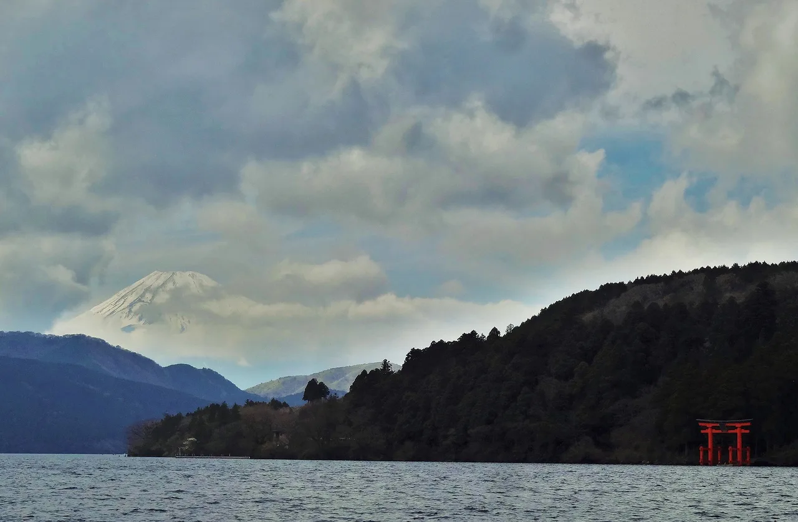

Evangelion 在 Hakone：探訪真實的 Tokyo-3
在《新世紀福音戰士》（Neon Genesis Evangelion）中，人類的要塞都市 Tokyo-3 矗立於群山與湖泊環繞的火山口之中。這個火山口是真實存在的：它就是距離 Tokyo 約 90 分鐘車程的溫泉勝地 Hakone。本作的地圖、車站名稱與地形均以 Kanagawa 這一角落的真實地理為藍本，精確度令人驚嘆——蘆之湖（Lake Ashi）、纜車、仙石原的草原——而小鎮也以一座 NERV 風格的「前哨站」、Eva 主題指示牌及官方 Evangelion 商店熱情回應。本攻略將帶你找到 Hakone 中 Evangelion 的印記所在、它與作品虛構世界的對應關係，以及如何將這趟聖地巡禮融入一般的溫泉之旅——還有部分攻略所承諾的「Eva 人孔蓋」真相，以及你將用到的日語。

為何 Hakone 就是 Tokyo-3
Evangelion 的創作者明確將 Tokyo-3 設定在 Hakone 火山口——作品中的地圖、車站名稱與地形均取材自 Kanagawa 這一角落的真實地理。火山口北部的高地地區仙石原（Sengokuhara），是虛構城市大部分場景的所在地；蘆之湖（Ashinoko）出現在多場關鍵戰役中；而Hakone 纜車的桃源台站（Tōgendai Station）則是劇中角色前往 NERV 總部途中所搭乘車站的原型。
Hakone 在動漫聖地巡禮目的地中之所以特別，在於這個地方也積極回應。2020 年由小田急集團（Odakyū Group）與藤田觀光（Fujita Kanko）——即該地區的交通與觀光業者——主導的大型「Evangelion × Hakone」觀光活動，將車站與設施裝扮成 NERV 風格，部分聯名元素至今仍清晰可見：主題指示牌、商店聯名，以及小鎮自建的 NERV「前哨站」，讓虛構世界的印記在街頭清晰可辨，而非只有粉絲才能察覺。這與鋼彈人孔蓋小鎮的模式如出一轍——以一個作品IP與在地夥伴合作，將粉絲引入真實場所。
Eva 景點與作品虛構世界的對應
以下是核心地點及其在作品中的對應關係。所有地點均為正常運作的溫泉小鎮中的公共場所——除一般交通費外無需另購門票。
| 真實地點 | 作品中的對應 | 備註 |
|---|---|---|
| Hakone-Yumoto 站周邊箱根湯本駅 | 入口門戶——Eva 主題裝飾與官方商店 | 車站內設有 EVA-Ya 官方周邊商店；繞道前請先確認目前營業時間 |
| 桃源台站（Hakone 纜車）桃源台駅 | 劇中人員前往 NERV 總部途中所搭乘車站的原型 | 同時也是蘆之湖觀光船的乘船處 |
| 蘆之湖芦ノ湖 | 多場戰役的背景，包括與使徒 Ramiel 的戰鬥 | 湖面、Hakone Shrine 的鳥居與富士山構成經典景觀 |
| 仙石原仙石原 | Tokyo-3 虛構版圖的核心所在 | 已廢校的仙石原中學（2008 年停辦，現已改作他用）是劇中駕駛員就讀學校的原型——請僅從公共用地觀看外觀 |
| 金時公園，仙石原金時公園 | 趣味「NERV 仙石原前哨站」所在地 | 一座以 NERV 風格與 AT 力場圖案改裝的公共廁所——是 Eva Hakone 中最多人拍照的打卡點 |
| 大涌谷大涌谷 | 纜車路線上的火山谷地 | 嚴格來說並非 Eva 的特定場景，但硫磺噴氣孔所呈現的「建於活火山口內的城市」氛圍，比任何 CG 都更有說服力 |
聯名裝置來來去去——商店遷址、指示牌更新、活動物件下架。固定的地理景觀（湖泊、纜車、仙石原）是永久存在的；任何特定商店或裝置，請以「繞道前先確認」的態度對待。
街頭的 NERV——以及 Eva 人孔蓋的迷思
你在街頭真正能看到的：小鎮與鐵路集團聯名留下的 Eva 風格導覽板與車站裝飾，以及金時公園的 NERV 前哨站（見下文）。在一個平凡的溫泉小鎮中發現散落各處的 NERV 元素，正是這場聯名所要呈現的趣味。
針對你可能在其他地方讀到的內容，有一點需要更正：多份網路攻略聲稱 Hakone-Yumoto 站附近有 Evangelion 人孔蓋。我們無法核實此說法——它既未出現在小鎮的官方 Evangelion 頁面，也未見於實地巡禮報告或日語資料來源。若你追求的是 Eva 排水蓋，有據可查的是 Saitama 縣所澤市（Tokorozawa）的太陽能 LED 發光蓋（其中包括 Rei 與 Asuka 的圖案），入夜後會發光——這是日本更廣泛的角色人孔蓋傳統的一部分。另請注意，角色人孔蓋通常不附帶可收集的人孔蓋卡——若你想要集卡，請另行查閱官方卡片清單。
- 學校舊址為私有土地。已廢校的仙石原中學（2008 年停辦）現已改作他用——請僅從公共用地觀看外觀，切勿擅自進入。
- 活動裝置來來去去。2020 年的大部分裝飾為臨時性質——請勿將行程重心放在某一特定指示牌上，並在 Hakone-Yumoto 熱鬧的主街上拍照時注意禮讓他人。
- 火山地區有時會封閉。大涌谷的進入許可受火山活動警報影響——請遵守現場公告的限制規定。
融入 Hakone 之旅的規劃方式
這趟聖地巡禮所走的路線，與每位 Hakone 遊客本就會走的環線完全重疊，使其成為日本最輕鬆的「隱藏版第二行程」：
- 交通方式：從 Shinjuku 搭乘小田急線至 Hakone-Yumoto（浪漫特快列車約 85 分鐘）。Hakone Free Pass 涵蓋登山鐵路、纜車、巴士與蘆之湖遊船——整趟聖地巡禮均可使用此票券。
- 經典環線即 Eva 環線：Hakone-Yumoto（人孔蓋、車站商店）→ 搭登山鐵路與纜車上山 → 纜車飛越大涌谷 → 下至桃源台 → 搭船橫渡蘆之湖 → Hakone Shrine 鳥居 → 搭巴士返回。每一段路程都與作品中的場景相呼應。
- 若住宿一晚，可加入仙石原：草原（秋季景色絕美）、金時公園的 NERV 前哨站，以及寧靜的溫泉旅館。
- 入住溫泉旅館。溫泉是 Tokyo-3 與真實 Hakone 唯一完全一致的事物。若想奢華一番，請參閱我們的旅館攻略。
以上部分連結為聯盟行銷連結，我們可能從中獲得佣金，且不會對你產生額外費用。我們只推薦自己也會使用的服務。
你實際會用到的日語
Hakone 的英語指示相當完善，但懂一點日語能讓你更深入 Eva 的世界：
| 日語 | 讀音 | 意思 |
|---|---|---|
| エヴァンゲリオン | Evangerion | Evangelion——當地人常簡稱為エヴァ（Eva） |
| 第3新東京市 | Dai-san Shin-Tōkyō-shi | 「Tokyo-3」——要塞都市的日語名稱 |
| 箱根 | Hakone | 真實的火山口小鎮 |
| 温泉 | onsen | 溫泉——Hakone 真正的主要魅力 |
| ロープウェイ | rōpuwei | 纜車——桃源台／大涌谷路線 |
| 芦ノ湖 | Ashinoko | 蘆之湖 |
| マンホール | manhōru | 人孔蓋 |
| 聖地巡礼 | seichi junrei | 「聖地巡禮」——前往作品真實取景地的朝聖之旅 |
想讓這些詞彙牢記在心？免費 JLPT 對戰測驗以間隔重複法訓練旅遊與文化詞彙，正包含這類單字。
只想要周邊，不想走聖地？
Evangelion 周邊——包括車站限定商品——出了名地以日本為中心。若你身在海外想收藏，可透過代購服務寄送至全球各地。
請參閱我們的誠實比較：如何透過 Buyee 與 ZenMarket 從日本購物 →
或直接前往 ZenMarket（代購服務，寄送至全球）→
Eva Hakone 可自然串聯至周邊其他粉絲目的地：Kamakura 的灌籃高手平交道 → 同在 Kanagawa 縣內，而更廣泛的打卡路線——角色人孔蓋 →、鋼彈人孔蓋 →、動漫聖地巡禮 →——彼此相互連結。我們的 Kanagawa 攻略涵蓋該縣其餘景點。
常見問題
Q. Hakone 真的是 Evangelion 中的 Tokyo-3 嗎？
A. 是的——本作明確將要塞都市設定在 Hakone 火山口，真實地理（蘆之湖、仙石原、纜車）與作品虛構世界高度吻合。小鎮也以官方 Eva 裝置與聯名活動積極回應這層連結。
Q. Hakone 有 Evangelion 人孔蓋嗎？
A. 儘管部分攻略如此聲稱，我們無法核實 Hakone 有任何 Eva 人孔蓋——官方小鎮資料與實地報告均未見記載。Hakone 街頭的 Eva 元素為主題指示牌、車站裝飾與 NERV 前哨站。有據可查的 Eva 排水蓋位於 Saitama 縣所澤市，為太陽能 LED 發光蓋。
Q. Hakone 的 NERV 前哨站是什麼？
A. 位於仙石原金時公園的一座公共廁所，以 NERV 風格與 AT 力場圖案改裝而成——是一處官方設置的趣味裝置，也是熱門打卡景點。
Q. 可以參觀 Evangelion 中的學校嗎？
A. 原型為仙石原中學，已於 2008 年停辦，現已改作他用。你可以從公共用地觀看外觀，但該場地為私有土地——請勿擅自進入。
Q. 從 Tokyo 如何前往 Hakone？
A. 從 Shinjuku 搭乘小田急線至 Hakone-Yumoto，搭乘浪漫特快列車約 85 分鐘。Hakone Free Pass 涵蓋當地交通環線（登山鐵路、纜車、遊船、巴士），同時也是 Eva 巡禮路線。
Q. 一天夠嗎？
A. 經典環線——Yumoto、纜車、桃源台、蘆之湖——可在一個長日一日遊中完成。若想不趕時間地遊覽仙石原與 NERV 前哨站，建議在溫泉旅館住宿一晚。